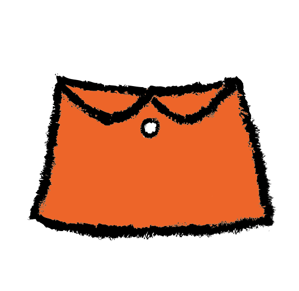

lees en leer meer over nijntje
-



nijntje is een lief klein konijntje die geboren is op 21 juni in 1955

dick vond het leuker om een jurkje te tekenen, zo is nijntje een meisjes konijntje


dit is de volgende bladzijde